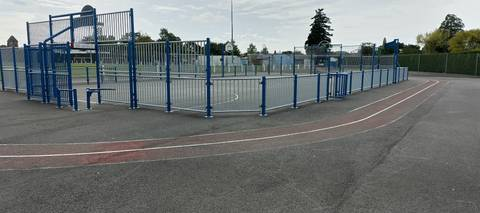
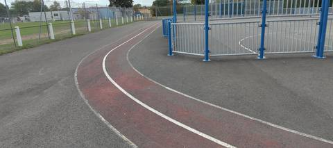

Très difficile de s'entraîner ici : la piste ne doit pas faire plus de 100 m au tour. J'ai essayé de courir un 80 m en couloir 1, et je me suis retrouvé déporté dans le couloir 2 en plein virage, tellement il est serré. Il n'y a aucun agrès. Cette piste n'est clairement pas adaptée aux adultes.
Gymnase du Moulin Bleu
Rue des Terres Noires, 44140 Montbert · Loire-Atlantique
Gymnase du Moulin Bleu is an athletics venue in Montbert (Loire-Atlantique), Pays de la Loire, France. It has an asphalt / tarmac running track with 2 lanes. Access is free and unrestricted.
Photos


A photo is surely still missing
Jump pits and throwing areas are what public data describes worst, and what gets photographed least. A close-up of the ground, a covered vault pit, a sand box gone to weeds: each adds what no field carries.
Send a photoNo GitHub account?Track
- Surface
- Asphalt / tarmac
- Lap length
- 100 m — estimated from OpenStreetMap, not measured on site
- Lanes
- 2
- Setting
- Outdoor
Access & amenities
- Free access
- Yes
Visite du 11 octobre 2026 : accès libre confirmé, on arrive sur l'anneau sans franchir ni portail ni barrière. Le terrain de football voisin est, lui, clos par un grillage.
Athlete reviews
Visite sur place le 11 octobre 2026. Cette fiche remplace ce qui n'était jusqu'ici qu'une lecture d'OpenStreetMap (relation/15744663) et de l'orthophoto IGN de 2025. L'anneau fait le tour d'un city-stade clôturé de barrières bleues — plateau en enrobé et paniers de basket — à côté du terrain de football. Deux couloirs tracés de lignes blanches : le couloir 1 est peint en rouge, le couloir 2 reste en enrobé gris. Au sol, c'est un enrobé peint, dur, et non du tartan ; la peinture rouge est usée par endroits. Le développement n'a pas été mesuré. Il est estimé à 100 m au plus, sur le périmètre du tracé OpenStreetMap et d'après le ressenti sur place. Les virages sont très serrés : sur un 80 m couru en couloir 1, on se retrouve déporté dans le couloir 2 en plein virage. Une mesure au décamètre en couloir 1, à 30 cm de la corde, reste à faire. Aucun agrès d'athlétisme : ni sautoir, ni aire de lancer. Le champ « agrès » reste vide. Site absent du recensement du ministère. C'est un anneau peint autour d'un city-stade, pas un équipement où un adulte peut s'entraîner.
Other venues in the department
- Complexe sportif des Richardières
- Piste de Remouillé
- Espace Yannick Noah
- Stade Louis Bartra
- Piste de La Chevrolière
- Stade Municipal
Report an error or complete this record
Réf. c-gymnase-du-moulin-bleu-montbert · Source: Community contribution — Data ES, French ministry for sport, Licence Ouverte 2.0. Records are self-declared and may be incomplete: check access conditions before travelling.